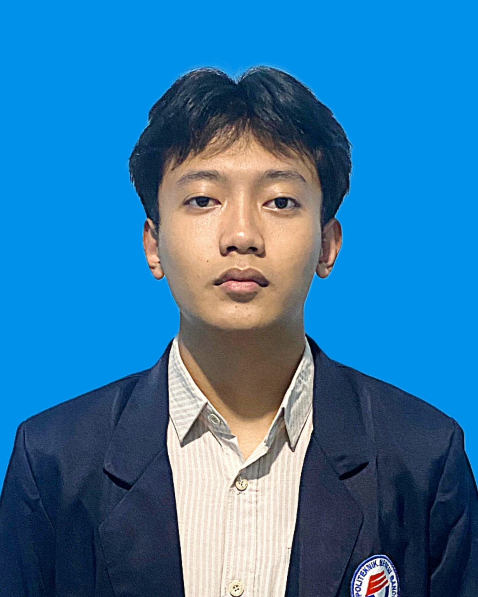

Curriculum Vitae
Profil

Nama : Ibnu Hilmi Athaillah
Kelas : 2C-D3 Teknik Informatika
Alamat : Majalengka, Indonesia
My Contact:
- Whatsapp +6282123235300
- Gmail ibnupisces08@gmail.com
Tentang Saya
Mahasiswa aktif D3 Teknik Informatika di Politeknik Negeri Bandung sekaligus lulusan SMK TKJ yang memiliki minat besar dalam dunia teknologi, pengembangan aplikasi, dan jaringan komputer.
Selama studi, saya aktif mengikuti berbagai kegiatan—dari magang industri, organisasi kampus, proyek aplikasi Islami, hingga menulis novel. Saya percaya bahwa setiap proses belajar, baik teknis maupun sosial, membentuk saya menjadi pribadi adaptif, kreatif, dan solutif. Dengan prinsip hidup Amor Fati, saya mencintai setiap tantangan sebagai bagian dari perjalanan bertumbuh.
Riwayat Pendidikan
- Politeknik Negeri Bandung
D3 Teknik Informatika | 2024 - Sekarang
- Sekolah Menengah Kejuruan / SMK Negeri 1 Palasah
Teknik Komputer dan Jaringan | 2021 - 2024
- Sekolah Menengah Pertama / SMP Plus Al-Aqsha
2018 - 2021
- Sekolah Dasar / SD Negeri Cibeureum 5
2012 - 2018
Pengalaman
Desainer Aplikasi - Alfateeh (Aplikasi Literasi Islami)
Oktober 2024 - Sekarang
- Merancang UI/UX aplikasi bertema kepemimpinan Islam untuk meningkatkan literasi berbasis nilai-nilai keislaman.
- Fokus pada aksesibilitas dan tampilan antarmuka yang intuitif untuk berbagai kalangan pengguna.
Ketua Pelaksana Program – CERDIK (LKMM-TD 2024)
November 2024 – Januari 2025
Program ini merupakan bagian dari kegiatan Latihan Kepemimpinan Manajemen Mahasiswa Tingkat Dasar (LKMM-TD) yang diselenggarakan oleh BEM Politeknik Negeri Bandung.
- Memimpin tim dalam menyusun dan menjalankan program literasi digital bertema anti-hoaks.
- Bertanggung jawab atas proposal, pelaksanaan kegiatan, dan kerja sama eksternal.
- Menerapkan konsep kerja profesional, termasuk struktur tim dan branding program.
Magang & Kursus Komputer
Juli – September 2023
- Mendalami dasar-dasar teknologi seperti BIOS, instalasi OS, driver, troubleshooting, dan dasar jaringan.
- Mengikuti pelatihan terpadu dari software hingga hardware secara langsung.